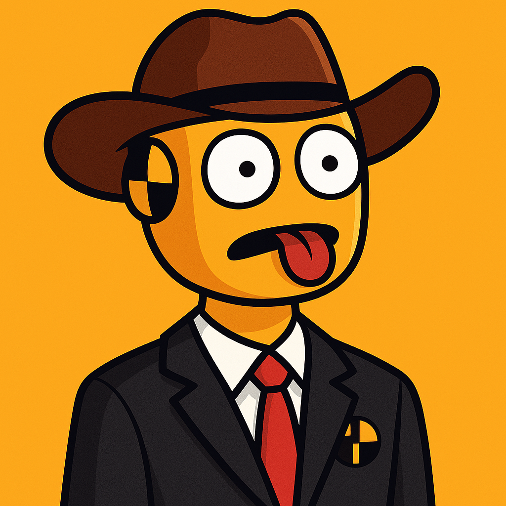

What is Wacky Burger About?

Wacky Burger is mostly about the wackyness that burgers can get. We can make you a burger with only letuce. Burgers that have too much tomatos. Burgers that are giant that no other food place would do. Wacky Burger is proud for being the way it is today. Being a simple yet wacky Burger Resturant that you can go out and eat at. Which you can even surprise your friends with the burger you got!
How It Started
Wacky Burger started out in 1984.
Serving up burgers to people that wanted them.
The burgers were grilled and made carefully.
But basically Wacky Burger originated from Texas,
Founded by John Wacky.
His first food item he ever made. Wacky Burger Jr.
Was a success. Then he proceeded to make French Fries like no other place could do.
You can say they are Freaking good french fries.
Wacky Burger has become a proud Burger Resturant ever sense then.
Suriving all the way till current date.
The Founder Himself

The founder grew up in texas.
Family grilled outside alot,
Making the best burgers he has ever eaten.
Eventually he grew older. Dawned a cowboy hat.
And wanted to make the burger he grew up with.
He wanted to share his knowlage, the taste,
and wackyness that a burger can have.